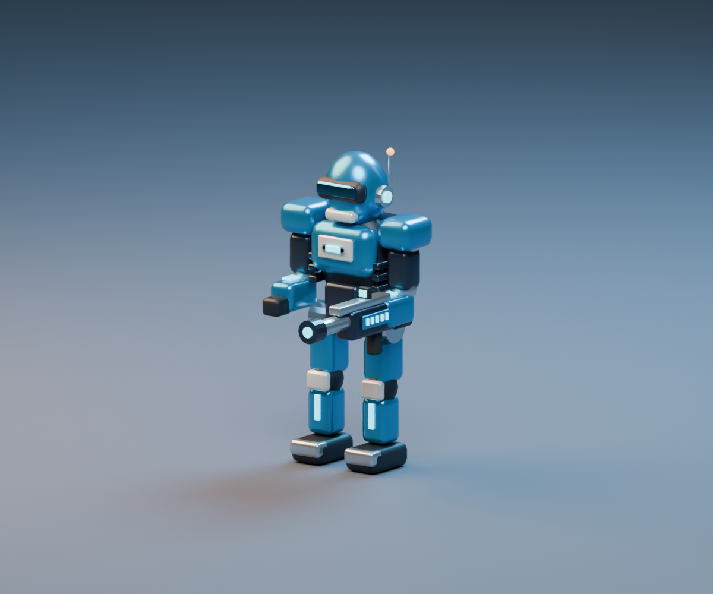
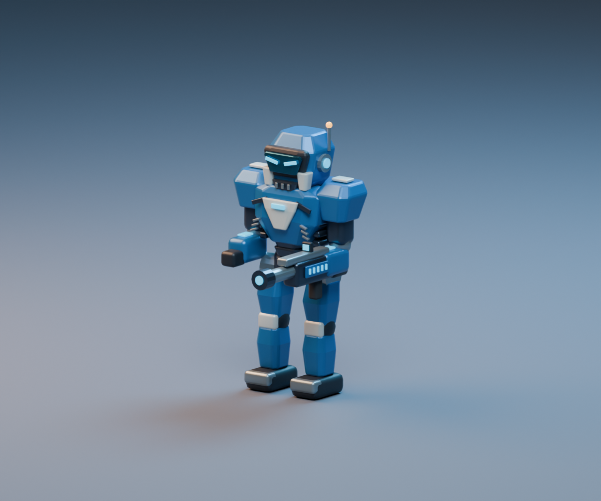
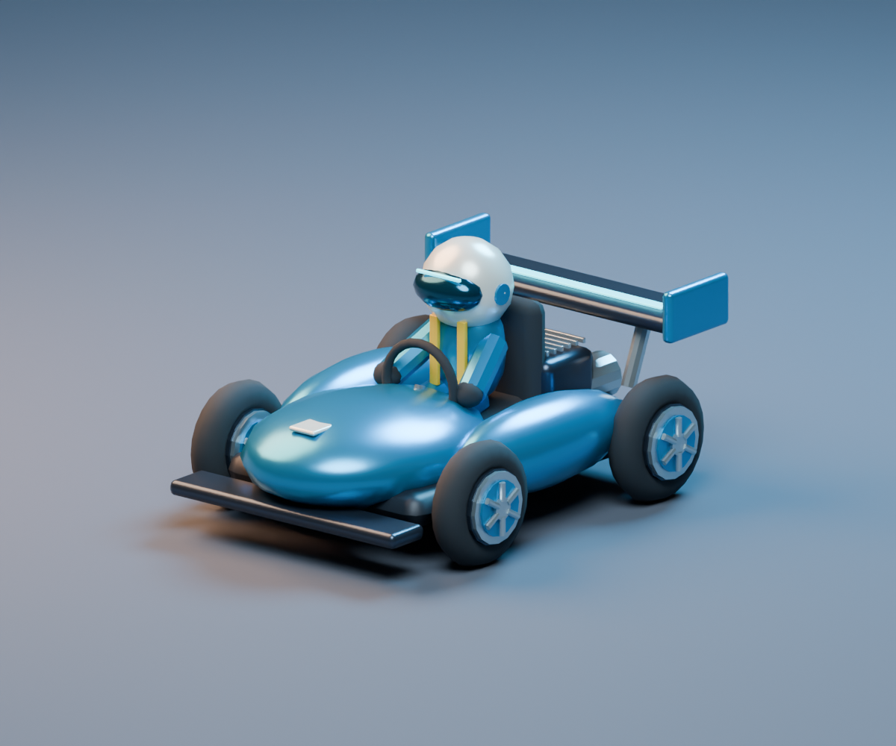
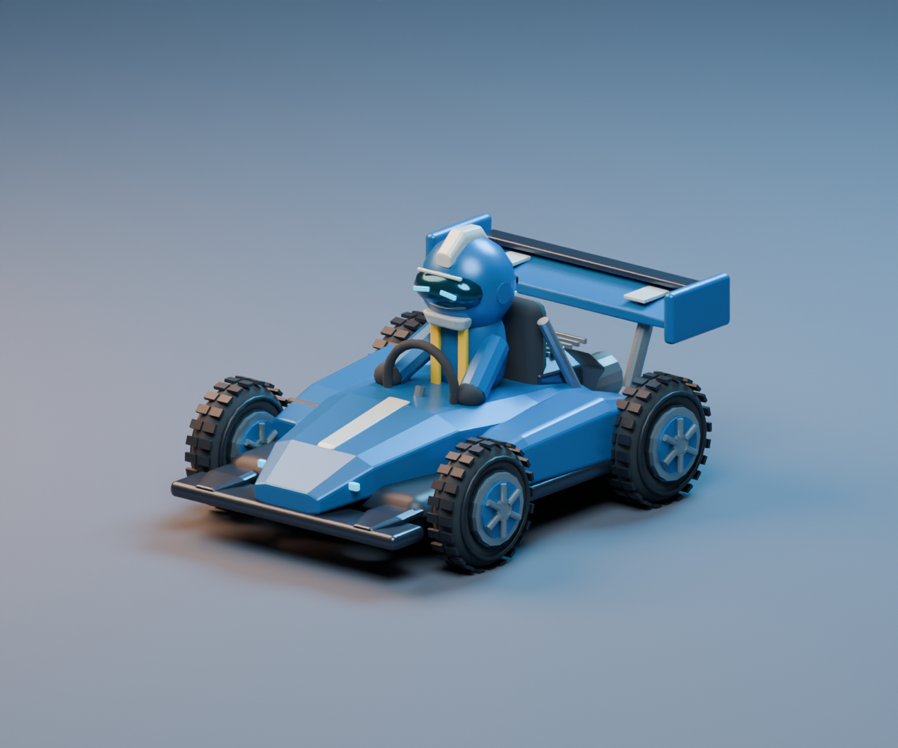
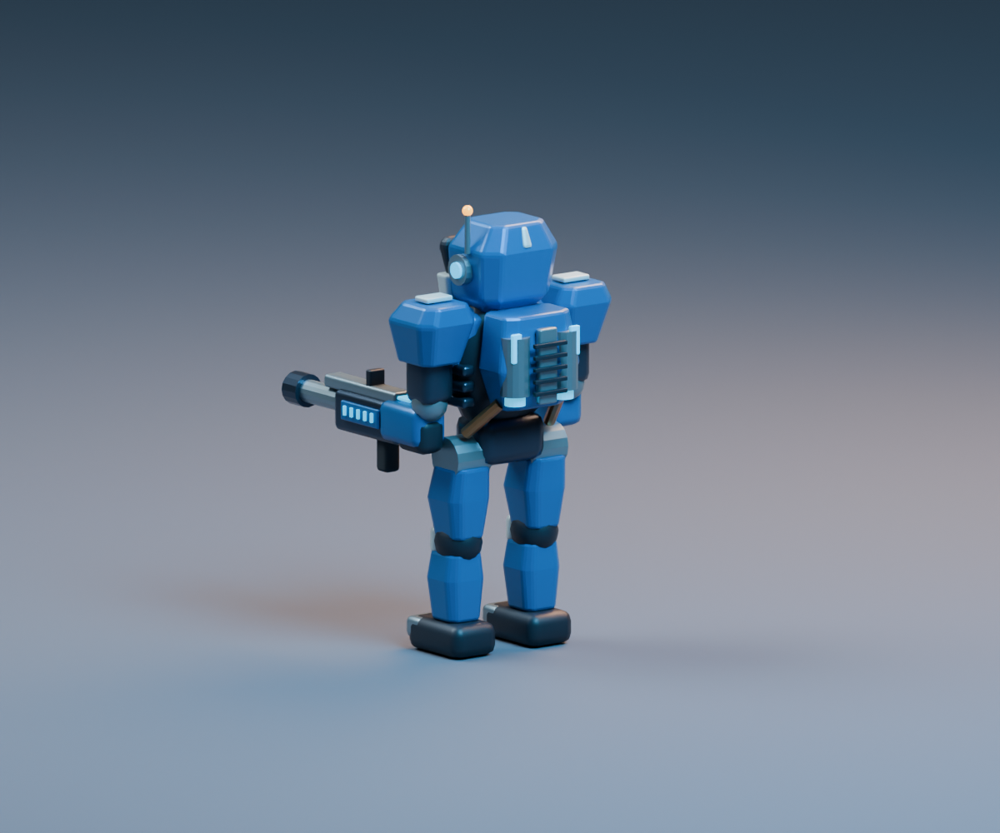
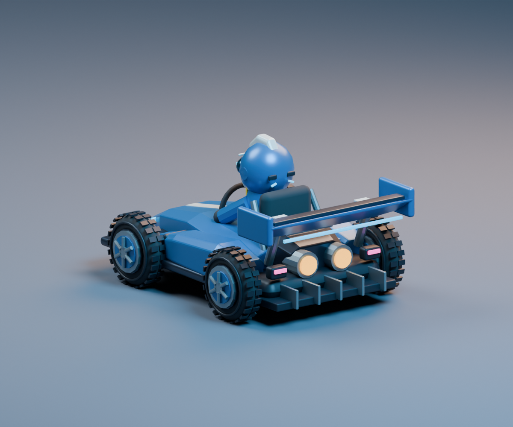

Rooms Arcade · revised character art
Actual Blender renders of the exported game assets. The revision changes silhouettes, color separation and the rear details visible during play.
Arena fighter

Before · rounded block armor and blank visor
After · tapered armor, expressive optics and layered face protectionCircuit kart

Before · rounded body and smooth tires
After · swept bodywork, tread, brake discs and aerodynamic detailsDesigned for the chase camera

Vented reactor backpack, metallic spine and light identifiers
Rear diffuser, twin exhausts, tail lamps, split wing and helmet vents